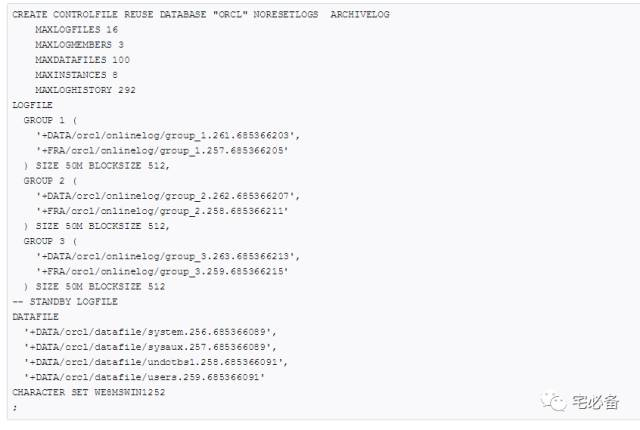

使用SQL*Plus创建数据库文件
原创 2017-11-21 Oracle 宅必备
这个专题讲ASM相关的内容
这节讲使用SQL*Plus创建数据库文件
1. 创建一个使用ASM的数据库
一般来说我们推荐使用DBCA来创建数据库，当我们需要手动命令创建的时候可以指定使用ASM，下面的语句创建一个数据库
CREATE DATABASE orcl;
该数据库包括以下内容：
-
data 磁盘组中包含一个system表空间数据文件
-
data 磁盘组中包含一个SYSAUX表空间数据文件,表空间是本地管理的而且使用ASSM
-
两个在线重做日志组，每组包含两个成员,分别在data磁盘组和fra磁盘组
-
如果启用了自动undo空间管理，则会在data磁盘组创建undo文件
-
如果没有指定CONTROL_FILES初始化参数，则会在data和fra磁盘组创建两个控制文件，data 磁盘组的控制文件为主控制文件
以上要求参数文件包含下面内容:
DB_CREATE_FILE_DEST = +data
DB_RECOVERY_FILE_DEST = +fra
DB_RECOVERY_FILE_DEST_SIZE = 10G
2. 创建一个使用ASM的表空间
使用ASM创建的表空间默认情况下数据文件会是自动扩展的(auto-extensible)，大小无限制(最大操作系统允许)，数据文件大小为100M，你可以在创建时指定相应的属性
我们可以使用RMAN命令讲ASM文件和非ASM文件相互转换
2.1 在data磁盘组新建表空间tblspace
CREATE TABLESPACE tblspace DATAFILE +data;
2.2 使用OMF创建表空间
假设设置了如下参数
DB_CREATE_FILE_DEST = +data
接下来创建表空间tblspace
CREATE TABLESPACE tblspace;
3.创建使用ASM的redo log文件
在线重做日志可以存在于不同的磁盘组
3.1 创建2个redo log组，每组一个成员
ALTER DATABASE ADD LOGFILE (+data1,+data2);
3.2 使用OMF创建redo log
假设在参数文件设置了如下参数
DB_CREATE_ONLINE_LOG_DEST_1 = +data1
DB_CREATE_ONLINE_LOG_DEST_2 = +data2
接下来创建redo log
ALTER DATABASE ADD LOGFILE;
4. 创建使用ASM的归档日志文件
我们可以在LOG_ARCHIVE_DEST 和LOG_ARCHIVE_DEST_n参数中指定磁盘组名称，这时会自动生成唯一名称
当参数设置成磁盘组时， LOG_ARCHIVE_FORMAT 参数会被忽略，如果设置的是磁盘组的一个目录，此时是生效的
下面内容为将LOG_ARCHIVE_DEST_n设置为+data时的目录结构
+DATA/ORCL/ARCHIVELOG/2009_09_23/thread_1_seq_38.614.541956473
+DATA/ORCL/ARCHIVELOG/2009_09_23/thread_4_seq_35.609.541956477
+DATA/ORCL/ARCHIVELOG/2009_09_23/thread_2_seq_34.603.541956487
+DATA/ORCL/ARCHIVELOG/2009_09_25/thread_3_seq_100.621.541956497
+DATA/ORCL/ARCHIVELOG/2009_09_25/thread_1_seq_38.614.541956511
5. 创建使用ASM的控制文件
下图为一个创建控制文件的例子，具体请看官方文档

具体请参考下面链接:
https://docs.oracle.com/cd/E11882_01/server.112/e18951/asmbysql.htm#OSTMG95282